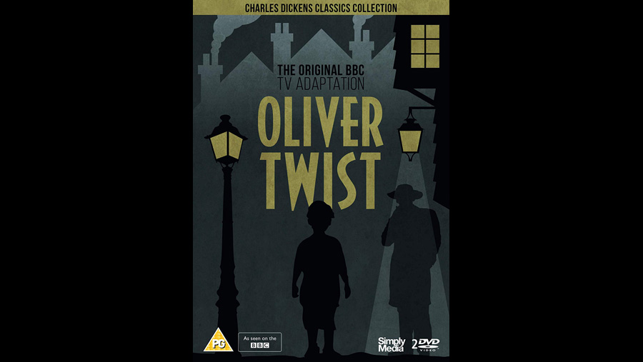

1962

CAST
Oliver Twist
-
Bruce Prochnik
Fagin
-
Max Adrian
Bill Sikes
-
Peter Vaughan
Nancy
-
Carmel McSharry
Mr. Bumble
-
Willoughby Goddard
Jack Dawkins, "The Artful Dodger"
-
Melvyn Hayes
Monks
-
John Carson
Rose Maylie
-
Gay Cameron
Mr. Sowerberry
-
Donald Eccles
CREATIVE TEAM
Director
-
Constance Cox
CREATIVE TEAM
The first BBC television adaptation of the Charles Dickens classic. Constance Cox s uncompromising 1962 adaptation of Dickens tale of a gang of orphan boys turned to crime changed the face of British Sunday teatime viewing. Her unvarnished depiction of despair and depravity in the back alleys of 19th-century London, and the cruel divide between rich and poor, shattered expectations of cosy family drama. The landmark BBC production was a gritty game-changer that raised the bar and stretched the boundaries of TV adaptation and serial drama.